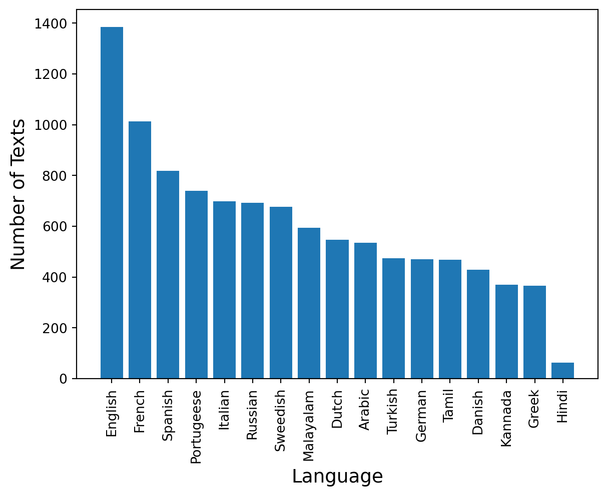
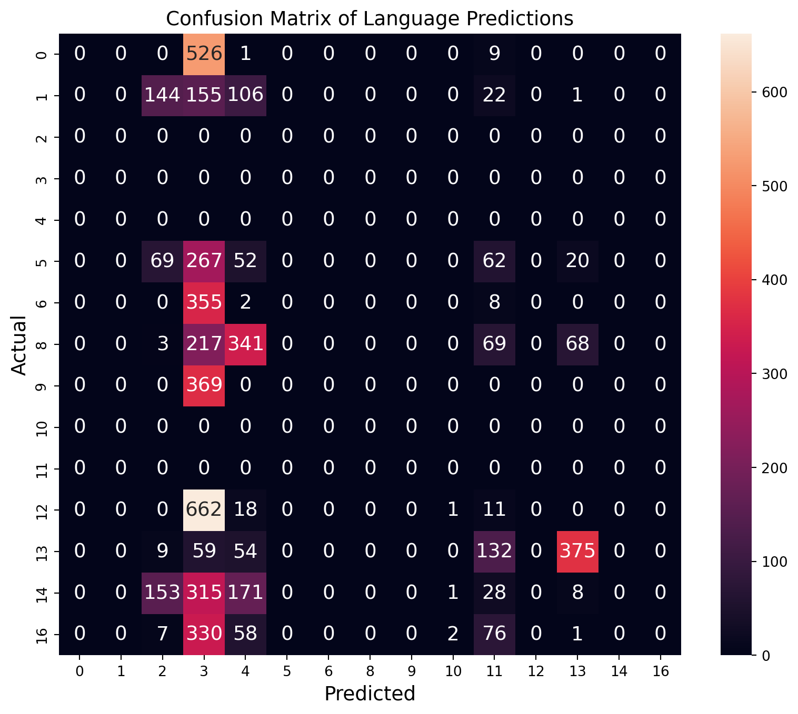

import sys
import pandas as pd
import matplotlib.pyplot as plt
assert sys.version_info >= (3, 7)from packaging import version
import sklearn
assert version.parse(sklearn.__version__) >= version.parse("1.0.1")First we read the input data. The data contains two columns: Text and Language
from sklearn.datasets import fetch_openml
df = pd.read_csv("./Language Detection-checkpoint.csv")print(df.keys())
df['Text']Index(['Text', 'Language'], dtype='object')0 Nature, in the broadest sense, is the natural...
1 "Nature" can refer to the phenomena of the phy...
2 The study of nature is a large, if not the onl...
3 Although humans are part of nature, human acti...
4 [1] The word nature is borrowed from the Old F...
...
10332 ನಿಮ್ಮ ತಪ್ಪು ಏನು ಬಂದಿದೆಯೆಂದರೆ ಆ ದಿನದಿಂದ ನಿಮಗೆ ಒ...
10333 ನಾರ್ಸಿಸಾ ತಾನು ಮೊದಲಿಗೆ ಹೆಣಗಾಡುತ್ತಿದ್ದ ಮಾರ್ಗಗಳನ್...
10334 ಹೇಗೆ ' ನಾರ್ಸಿಸಿಸಮ್ ಈಗ ಮರಿಯನ್ ಅವರಿಗೆ ಸಂಭವಿಸಿದ ಎ...
10335 ಅವಳು ಈಗ ಹೆಚ್ಚು ಚಿನ್ನದ ಬ್ರೆಡ್ ಬಯಸುವುದಿಲ್ಲ ಎಂದು ...
10336 ಟೆರ್ರಿ ನೀವು ನಿಜವಾಗಿಯೂ ಆ ದೇವದೂತನಂತೆ ಸ್ವಲ್ಪ ಕಾಣು...
Name: Text, Length: 10337, dtype: objectPlot languages against the number of texts in that language
plt.rc('font', size=14)
plt.rc('axes', labelsize=14, titlesize=14)
plt.rc('legend', fontsize=14)
plt.rc('xtick', labelsize=10)
plt.rc('ytick', labelsize=10)
plt.bar(x=df['Language'].value_counts().index, height=df['Language'].value_counts())
plt.xlabel('Language')
plt.ylabel('Number of Texts')
plt.xticks(rotation=90)
plt.show()
Preprocess the Data
Make sure the texts only contain alphabetical characters
# Text data preprocessing
# Uniform case, remove symbols and whitespace
df['Text'] = df['Text'].str.lower()
df['Text'] = df['Text'].str.replace(r'[\([{})\]!@#$,"%^*?:;~`0-9]', '', regex=True)
df['Text'] = df['Text'].str.strip()Using TF-IDF: Term Frequency Inverse Document Frequency
We use TF-IDF to transform text into numeric data. This measures the originality of a word by comparing the number of times a particular word appears in a text versus the number of texts that word appears in
# The TF-IDF vectorizer initializing
from sklearn.feature_extraction.text import TfidfVectorizer
tfidf_vectorizer = TfidfVectorizer()
tfidf_vectorizer.fit(df['Text'])
X_tfidf = tfidf_vectorizer.transform(df['Text'])We use a Label Encoder to convert each language name to a number.
# Encoding the target labels (languages)
from sklearn.preprocessing import LabelEncoder
label_encoder = LabelEncoder()
y_encoded = label_encoder.fit_transform(df['Language'])Split the data into testing and training sets
X_train, X_test, y_train, y_test = X_tfidf[:5000], X_tfidf[5000:], y_encoded[:5000], y_encoded[5000:]
#X_train, X_test, y_train, y_test = X_tfidf[:5000], X_tfidf[5000:10000], y_num[:5000], y_num[5000:10000]
X_train_english = (X_train == 1) # True for all English texts, English = 1
print(y_encoded)[3 3 3 ... 9 9 9]Use SGD (Stochastic Gradient Descent) to classify and make predictions
# Training binary classifier
from sklearn.linear_model import SGDClassifier
import numpy as np
sgd_clf = SGDClassifier(random_state=42)
sgd_clf.fit(X_train, y_train)SGDClassifier(random_state=42)Prediction Function
This prediction function takes a text as input, and outputs the predicted language that the text is written in.
# predict languge given text
def predict_language(input_text):
input_text = input_text.lower() # preprocess input text
input_tfidf = tfidf_vectorizer.transform([input_text]) # convert input to numeric data
predicted = sgd_clf.predict(input_tfidf) # get encoded prediction
predicted_language = label_encoder.inverse_transform(predicted) # decode prediction
return predicted_language
#predict_language(X[1400])Data Visualization
Creating a confusion matrix to illustrate the predictions made by the classifier.
from sklearn.metrics import confusion_matrix
from sklearn.preprocessing import LabelEncoder
import matplotlib.pyplot as plt
import seaborn as sns
# Fit the label encoder on all possible labels
label_encoder = LabelEncoder()
label_encoder.fit(df['Language']) # Fit on the entire label set
# Now transform the test labels
Language_test_encoded = label_encoder.transform(df['Language'][5000:])
Text_test = df['Text'][5000:]
predicted_languages = [predict_language(text) for text in Text_test]
# Transform the predicted languages back to the encoded form
predicted_languages_encoded = label_encoder.transform(predicted_languages)
# Comparing the predicted languages with the actual labels
results_df = pd.DataFrame({'Actual': Language_test_encoded, 'Predicted': predicted_languages_encoded})
# Construct the confusion matrix manually
conf_matrix = confusion_matrix(results_df['Actual'], results_df['Predicted'])
# Get all unique labels present in the actual and predicted labels
all_labels = np.union1d(results_df['Actual'], results_df['Predicted'])
# Convert to DataFrame for easier plotting
# Use all_labels for both the index and columns to account for every possible class
conf_matrix_df = pd.DataFrame(conf_matrix,
index=all_labels,
columns=all_labels)
# Plot the confusion matrix
plt.figure(figsize=(10, 8))
sns.heatmap(conf_matrix_df, annot=True, fmt='d', square=True)
plt.title('Confusion Matrix of Language Predictions')
plt.xlabel('Predicted')
plt.ylabel('Actual')
plt.show()
# Calculate accuracy
accuracy = (results_df['Actual'] == results_df['Predicted']).mean()
print(f'Accuracy of the predict_language function: {accuracy:.2f}')C:\Users\veda\AppData\Local\Programs\Python\Python37\lib\site-packages\sklearn\preprocessing\_label.py:133: DataConversionWarning: A column-vector y was passed when a 1d array was expected. Please change the shape of y to (n_samples, ), for example using ravel().
y = column_or_1d(y, warn=True)
Accuracy of the predict_language function: 0.07Interpretation
From the confusion matrix, we can see that the model is very good at predicting some languages (like the one labeled ‘8’, with 341 correct predictions). Some languages are often confused with others, such as labels ‘5’, ‘6’, ‘9’, and ‘12’, indicating potential areas for model improvement. The accuracy of this model could potentially be improved by using more training data and by trying different algorithms.